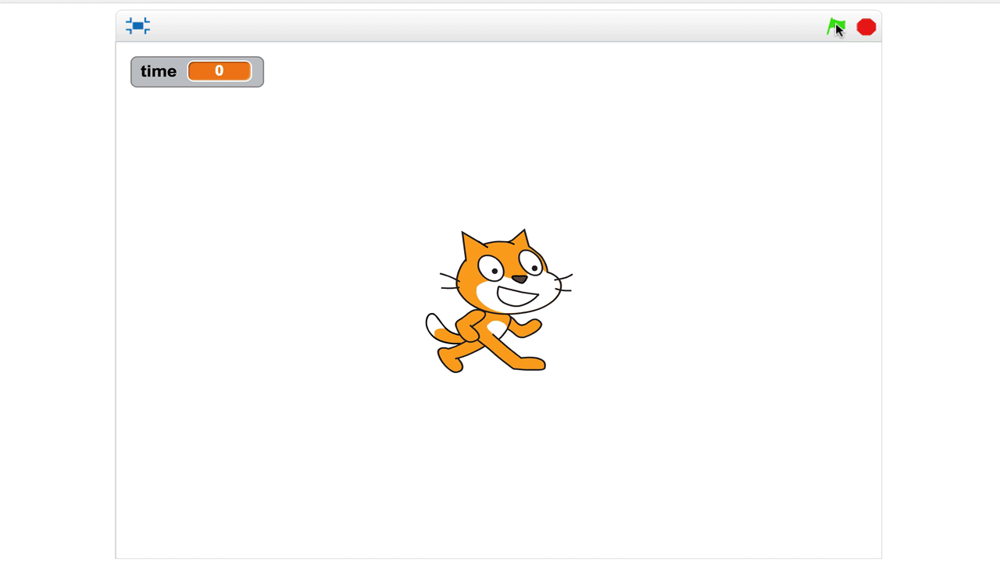
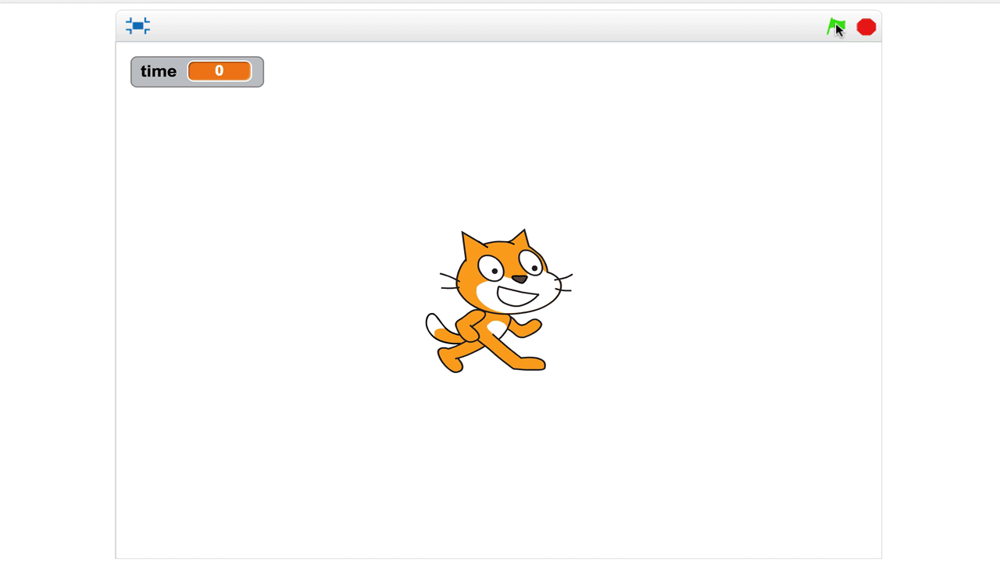
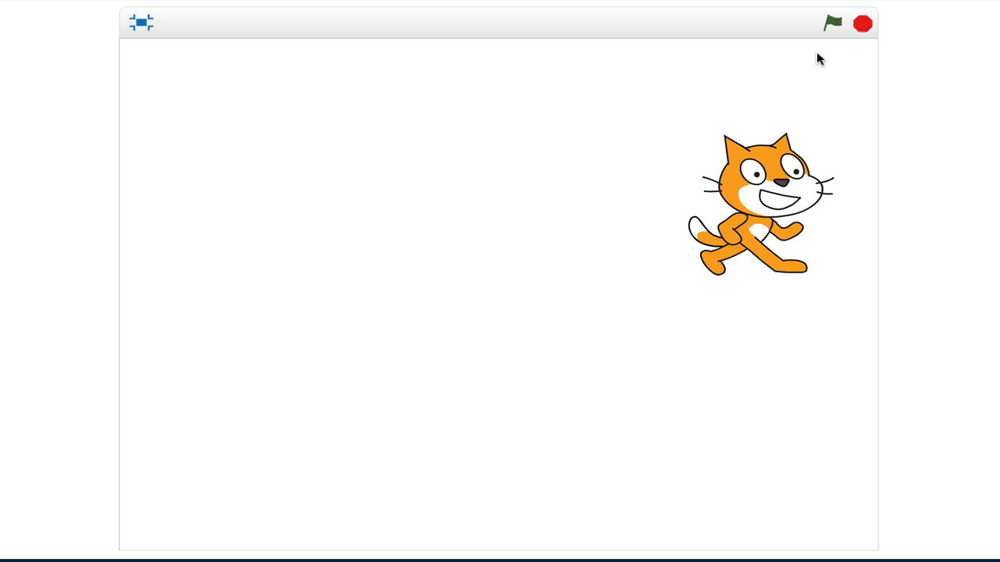

3.2
Create a timer that counts down from 5 and then gives a message at the end
Use the following blocks:


Create a variable called name. Set the variable to your name and have them greet you
Create a timer that counts down from 5 and then gives a message at the end
Use the following blocks:
Use the the glide and move blocks to make your character start in the center and then glide in a box
Use the following blocks to make your charcter move up, down, left, and right when you press the arrows